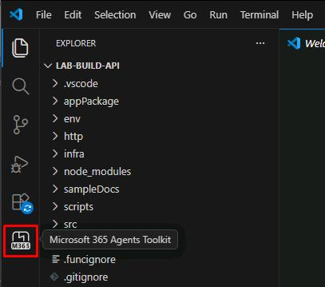
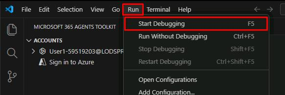

Task 01: Run the application
Description
You’ll open the Trey Research project in Visual Studio Code, sign in to the Microsoft 365 Agents Toolkit, and start the debugger to run the Azure Functions API locally.
Success criteria
- You signed in to your Microsoft 365 account through the Agents Toolkit.
- The debugger started successfully and Microsoft Edge opened a sign-in window.
- You minimized Edge without signing in, leaving the debugger running.
Key steps
-
Sign in to the lab VM with the following credentials:
Item Value Username @lab.VirtualMachine(Windows11(25H2)).Username Password +++@lab.VirtualMachine(Windows11(25H2)).Password+++ -
Open Visual Studio Code.
This will open a project folder with a declarative agent located in
C:\Lab Files\lab-build-api. -
In the leftmost pane, select the Microsoft 365 Agents Toolkit icon.

-
In the MICROSOFT 365 AGENTS TOOLKIT pane, under the ACCOUNTS section, select Sign in to Microsoft 365.
-
In the dialog, select Sign in.
-
In the Windows Security dialog, select Allow.
-
Sign in with your lab credentials:
Item Value Username @lab.CloudPortalCredential(User1).UsernamePassword @lab.CloudPortalCredential(User1).AccessToken -
Close the browser to return to Visual Studio Code.
-
In the top menu bar, select Run, then Start Debugging.

This may take a couple minutes to start.
-
In the Windows Security dialog, select Allow.
Once started, Microsoft Edge will open a sign in window.
-
Minimize Microsoft Edge without signing in.
Do not close the window as that will stop the debugger.